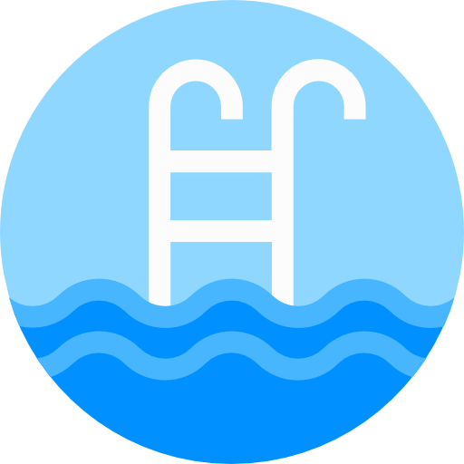
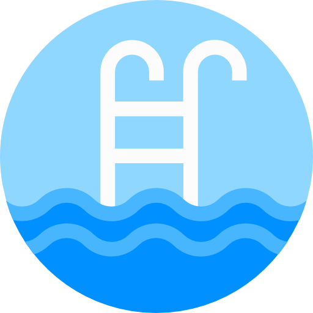
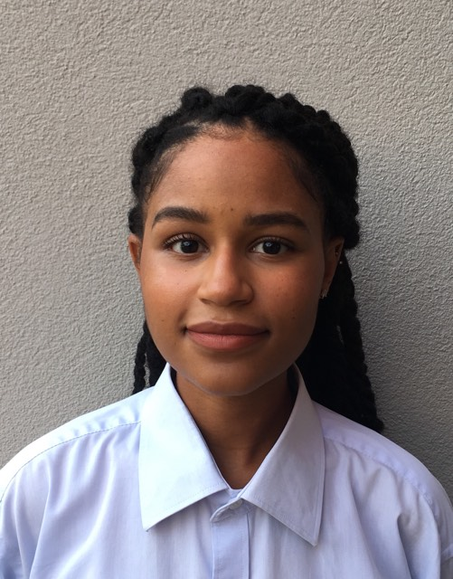

A propos de moi
Mes Hobbies
 

Moi
- Gomes Cindy
- Cannes
- cindy.gomes@outlook.fr
- 03/04/1999
Bonjour ! Je m'appelle Gomes Cindy, j'ai 22 ans et je suis Web designer Junior. J'ai effectué mes études en 'Information et Communication' dans la très belle ville de Montpellier puis après une année de césure j'ai repris mes études à la LP IMAPP. Vous trouverez mon curriculum vitae ci-dessous, n'hésitez pas à cliquer sur la rubrique "Me Contacter" pour toutes questions ! A bientôt :)